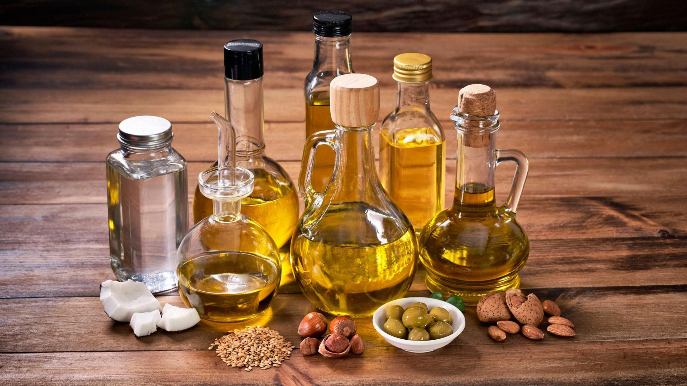
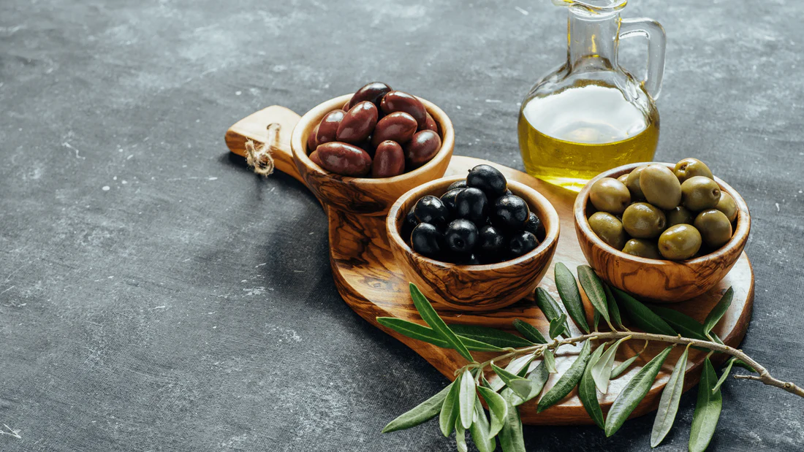

Maison founded in 1996
Our Story
Founded recently in 2025 as a small artisanal venture, the company began with a simple vision: to produce premium olive oil that captures the richness and authenticity of Tunisian olives. Inspired by generations of traditional olive cultivation, the company combines ancestral cold-pressing techniques with modern production methods to deliver a product that is both high-quality and sustainable.
From the very beginning, the focus has been on purity, flavor, and wellness, highlighting the natural benefits of olive oil while maintaining the integrity of its heritage. By emphasizing craftsmanship, careful selection of olives, and eco-conscious production, the company has quickly gained attention in both local and international gourmet markets.
Despite operating in a competitive environment, the company positions itself as a premium, authentic, and sustainable brand, offering consumers an experience that reflects both tradition and modern excellence. Its products appeal to discerning buyers who value quality, health, and authenticity in every drop.
Timeline
Market Challenges and Regulatory Environment
Despite its rapid success, Aurelia Oliva operates in a highly competitive and increasingly regulated sector. Strict food-safety standards and traceability requirements from both the Tunisian Ministry of Agriculture and the European Union significantly influence operations. Premium ingredients — especially organic olives — must meet rigorous certification criteria. Although EU trade agreements facilitate the export of Tunisian olive oil, they introduce complex requirements related to origin labeling, pesticide limits, and quality testing. These regulations increase supply-chain costs and push the company toward continuous quality improvement.
Fluctuating global trade dynamics, unstable olive harvests due to climate change, and currency fluctuations (particularly against the euro) also impact production costs. Meanwhile, international demand for premium olive oil continues to grow, especially in Europe, Asia, and North America, where consumers increasingly value high-end, healthy, and artisanal products.
1996 Founding inspiration
Target Market and Clientele
As a premium brand, Aurelia Oliva targets affluent and quality-conscious consumers. Its clientele includes:
1. International tourists in Tunisia
Particularly from Europe, the Gulf, and North America — attracted by the authenticity of Tunisian terroir and the excellence of Mediterranean gastronomy.
2. Upper-middle-class residents of major Tunisian cities
Professionals and food lovers seeking refined, healthy products that reflect local heritage and modern craftsmanship.
3. Gourmet food enthusiasts and chefs
Drawn to unique aromas, cold-press techniques, and single-origin limited editions.
4. Corporate and luxury partners
Including boutique hotels, fine-dining restaurants, concept stores, and premium gift suppliers.
Aurelia Oliva frequently develops customized bottles for private events and collaborations.
Whether used in high-end gastronomy or as an elegant gift, Aurelia Oliva’s oils are widely recognized for their purity and sophistication.
Supply chain
Supply Chain and Raw Materials
Aurelia Oliva’s supply chain emphasizes quality, sustainability, and transparency:
Chemlali olives sourced from family farms in Sidi Bou Ali and Kairouan
Chetoui olives from the northwest regions of Béja and Siliana
All olives harvested by hand and cold-pressed within 6 hours to preserve antioxidants
Exclusive ingredients for infused oils, such as wild rosemary, Sicilian lemon, chili, basil, and truffle essence
Packaging materials sourced from eco-responsible suppliers in Tunisia and Italy
The main challenge remains the irregularity of olive harvests due to drought, climate variability, and limited water resources in Tunisia’s central regions.
Raw material prices — especially for organic olives and high-quality glass bottles — are also highly volatile, influenced by weather conditions and global demand.
Although the premium olive oil segment is resilient, reduced purchasing power in Tunisia may affect domestic sales. However, exports to Europe, the Gulf, and Asia continue to grow significantly.

Aurelia Oliva competes with well-established Tunisian brands such as:
Terra Delyssa
Olivko
Domaine Adonis
Chouchene Olive Oil
International premium olive oil producers from Italy, Spain, and Greece also represent strong competitors in global markets.
However, the increasing global interest in healthy, authentic, and traceable Mediterranean products offers a major opportunity for Aurelia Oliva. Entry barriers in the premium segment — such as quality consistency, branding, artisanal skill, and certifications — remain high, giving the company a competitive advantage.
The brand’s strengths include:
A strong Tunisian heritage
A unique fusion of traditional and modern extraction methods
High-level craftsmanship
A rising global appetite for natural, premium olive oils.
Market forces
Volatility and competition
Sustainability and Packaging
To honor the rarity and purity of its oils, Aurelia Oliva uses eco-friendly, UV-protected glass bottles, custom-designed labels, and recyclable packaging. New European sustainability regulations encourage the company to invest in greener materials — an initiative that increases costs but enhances brand reputation.
Limited collections are released for:
.Ramadan
.Olive harvest season
. corporate events
The brand also offers immersive experiences:
.Guided mill visits
.Tasting workshops
.“Harvest with Us” seasonal experiences
.Personalized olive oil pairings for restaurants
On social media — especially Instagram and TikTok — Aurelia Oliva showcases its craftsmanship through visually appealing content that highlights harvests, production processes, and Mediterranean culinary inspirations.
Presentation
Packaging and limited editions
To honor its exceptional products, Aurelia Oliva invests in premium, eco-conscious packaging sourced from specialized partners. Sustainability regulations and growing consumer demand for responsible practices accelerate the shift to environmentally friendly materials—raising costs but enhancing the brand’s image. Limited editions are released for occasions such as Ramadan, Valentine’s Day, Eid, and holiday gift sets. Custom finishes and personalization options reflect both Tunisian heritage and client-specific preferences.

People
Training, culture, and craftsmanship
Rapid international growth created staffing challenges; the brand will not compromise on skill or quality. Aurelia Oliva’s leadership cultivates a participative, exacting, and caring management style rooted in respect for traditional Tunisian olive-growing heritage. Continuous training preserves multi-generational know-how, while financial incentives, tailored career paths, and mobility opportunities foster employee loyalty.

Employee wellbeing is central: calming work environments, cultural sharing moments, and creative freedom in bespoke olive oil projects. The main risk remains the loss of artisanal expertise and the pressure of sustaining the brand’s image during rapid expansion. Intercultural training and weekly exchanges help align teams across different markets.